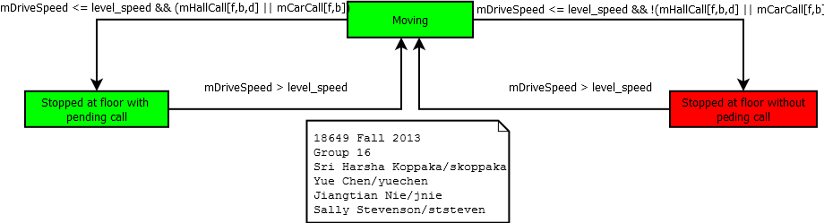
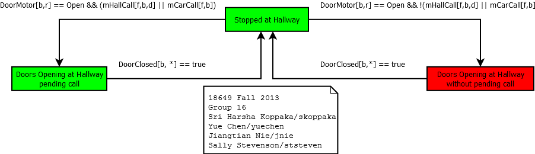
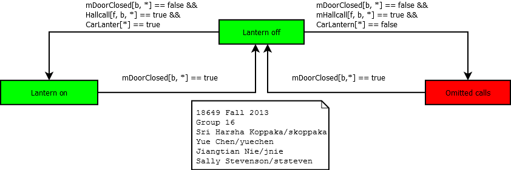
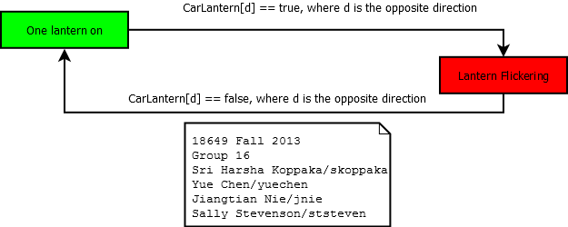
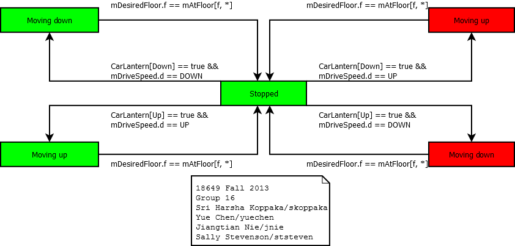
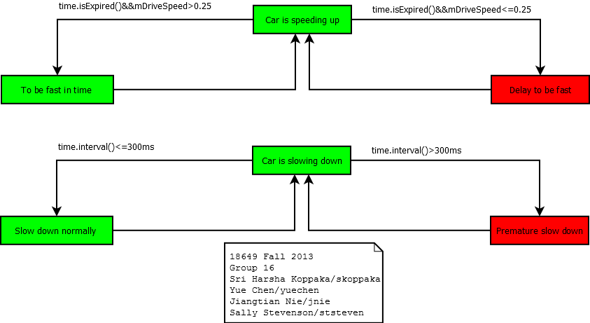
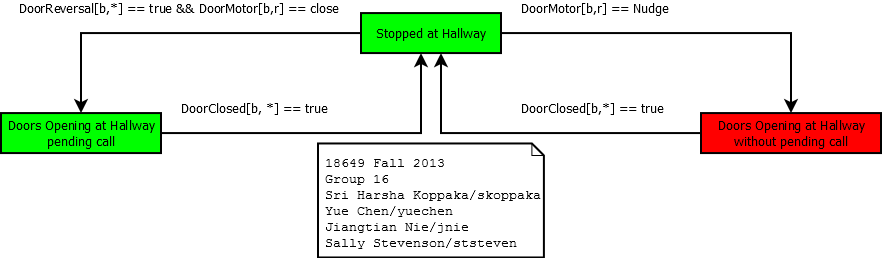

18649 - High Level Requirements
Verification
18649 Fall 2013
Group 16 - Jiangtian Nie (jnie)
Sally Stevenson (ststeven)
Sri Harsha Koppaka (skoppaka)
Yue Chen (yuechen)
Verification Framework Description
R-T6
R-T6: The Car shall only stop at Floors for
which there are pending calls.

R-T7
R-T7: The Car shall only open Doors at
Hallways for which there are pending calls.

R-T8.1
R-T8.1: If any door is open at a hallway and
there are any pending calls at any other floor(s), a Car Lantern
shall turn on.

R-T8.2
R-T8.2: If one of the car lanterns is lit, the
direction indicated shall not change while the doors are open.

R-T8.3
R-T8.3: If one of the car lanterns is lit, the
car shall service any calls in that direction first.

R-T9
R-T9: The Drive shall be commanded to fast
speed to the maximum degree practicable.

R-T10
R-T10: For each stop at a floor, at least one
door reversal shall have occured before the doors are commanded to
nudge.

WriteUp
R-T6: This requirements is violated only if the car stops at
a floor for which there are no pending calls. We record the car
stopping (going from a speed greater than LEVEL_SPEED to a speed at
or below LEVEL_SPEED) and check if there were any pending calls at
the floor the car has stopped at. If there are no pending calls and
the car stops, we throw a warning message.
R-T7: This requirements is violated only if the doors open at
a floor for which there are no pending calls. We check if the
HallCall or CarCall for the particlar hallway is true when the doors
are opening. If they are false and the doors open, we throw a
warning message.
R-T8.1: This requirements is violated only if a door is open
at a hallway with pending calls at any other floor and the car
lantern does not turn on. In order to get rid of the lag in the
lantern control, we add delay in the monitor before we check the
requirement. When 200 ms passes after the door is fully
closed, we check if there were pending calls AND neither lantern was
on while the door was open. We throw a warning message and increment
the count for the omited calls in case the lantern wasn't on with
pending calls.
R-T8.2: This requirements is violated only if the doors are
open when a lantern is lit, and the direction indicated changes.
Before turn on any lantern, we check the other lantern is lit or
not. If both lanterns are lit at the same time, we throw a warning
message and increment the count for the lantern flicker.
R-T8.3: This requirements is violated only if a car lantern
is lit and the car services any call in the opposite direction.
Every time when car stops AND any door is open AND any lantern turns
on, we record the direction of the lit lantern. When the car moves
to the opposite direction to the recorded lantern direction, we
throw a warning message and increment the count for the conflict
direction.
R-T9: This requirements is violated only if our drive control
does not command the drive to change from SLOW_SPEED to FAST_SPEED
whenever possible. We check that the drive speed reaches the fast
speed when we have enough time to do so while moving between floors
and make sure it spends maximum possible time in fast speed by
checking the time spent to slow down to stop at a floor.
R-T10: This requirements is violated only if we are stopped
at a floor and the doors are commanded to nudge before a door
reversal has occured. Thus, whenever we stop at a floor, we keep
track of whether a door reversal has occurred. If it has, no
violation can occur for this stop. If no door reversal has occurred
and the door begins nudging, a violation has occurred and we throw a
warning.
Verification Instructions
Run the simulator with the following
command
$
java simulator.framework.Elevator
-monitor Proj11RuntimeMonitor -b 200 -fs 5.0 -pf <acceptance
test .pass file> > <output file>
Verification Results
{kind=link}